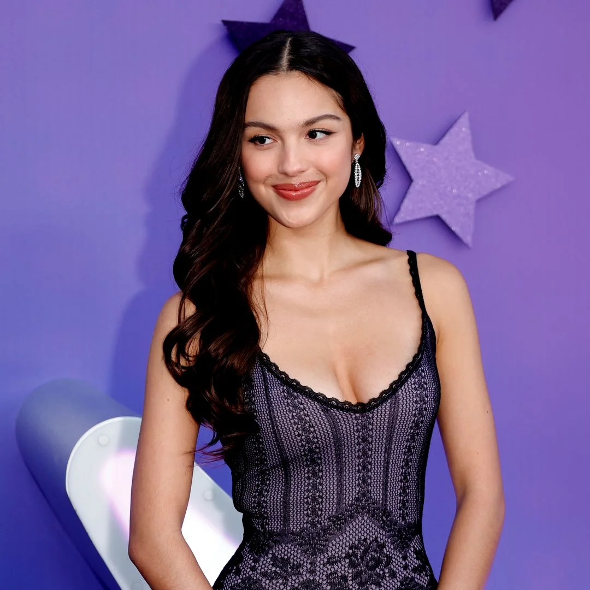

01
Wie is Olivia?
Olivia Rodrigo is een Amerikaanse zangeres en actrice. Ze begon met acteren en maakte daarna de overstap naar muziek. Haar eerste album SOUR werd een groot succes.
⭐️ MY DIGITAL GARDEN ⭐️

Singer • Actress
Olivia Rodrigo is een Amerikaanse zangeres en actrice. Ze werd bekend door haar rol in de serie High School Musical: The Musical: The Series. Daarna werd ze wereldwijd bekend met haar muziek. Bekende nummers van haar zijn drivers license, good 4 u en vampire. Ik heb Olivia gekozen omdat ik haar muziek mooi vind.
01
Olivia Rodrigo is een Amerikaanse zangeres en actrice. Ze begon met acteren en maakte daarna de overstap naar muziek. Haar eerste album SOUR werd een groot succes.
02
Haar muziek bestaat vooral uit pop en poprock. In haar nummers verwerkt ze vaak haar eigen gevoelens. Hierdoor zijn haar liedjes voor veel mensen herkenbaar.
01 drivers license
02 good 4 u
03 vampire
04 deja vu
05 traitor
Ik vind Olivia leuk omdat ik haar muziek erg mooi vind. Haar liedjes hebben vaak veel gevoel, maar er zitten ook toffe poprocknummers in. Ik vind het ook leuk dat ze haar eigen ervaringen in haar muziek verwerkt.